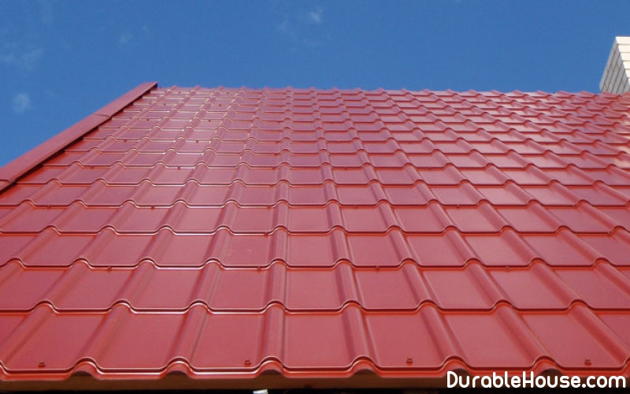

Metal roof tile: soundproofing
The noise that so worries the buyers of roofing material is, of course, noise, drops of rain falling on the roof. By and large, there is no roofing material that would be absolutely noiseless in rainy weather. However, there is a common the opinion that the greatest noise is produced by metal roofing. An unequivocal response to the question "is this" to you no one will give. Nevertheless, manufacturers of metal tile, and installers are unanimous in that noise during rain, hail or strong winds is not a sign of the material itself - metal. It's always the fault of careless installers. AND this disadvantage will apply to all sheet metal roofs: both to galvanizing, and to a copper roof, etc.
If the lath is made of different-sized materials, the metal tile, like
sheet
material will hang over certain sections of the crate. It is this "tambourine" will create
"Clapping" and "spanking" special effects, even with weak gusts of wind.
Cause the second
- Savings on self-tapping screws
Manufacturers of metal, before starting to produce it, long thought about how it will cover the roof of the buyers. Entire teams developed technology, conducted tests, and all this in order for the installation team that came to you to mount metal, did not think about the question: how many it is necessary to screw the screws to it was aesthetic, and reliable, and noiseless? So you need to act strictly according to the instructions, which in this respect says: 8 self-tapping screws per square meter. And it's best to buy those self-tapping screws that the manufacturer advises you, if they are not included. If in your the roof of the screws was screwed to the minimum, only to ensure that it did not fly away, the result will not take long to wait - rain in Belarus is not uncommon.
The smaller the angle of the roof, the more clearly you will hear drops. But here there is no more fault of the builders, and there is nothing to be done about it. Nevertheless, we are talking about sounds, which are heard outside, not inside the house.
If you have an attic, you will surely insulate it, and consequently, soundproof. If y
you under the roof of the attic space, then heat and sound insulation will be overlapped.
so where does the noise come from, and in the metal tile, it's because between the person's ear and the roof
a sufficiently large layer that absorbs the noise of falling drops.
In order to avoid
similar problems, you should pay attention to the qualifications, experience of installation
organizations in this field. They must own technology and give a guarantee on
work performed. Often a good team of installers can advise themselves
manufacturers (their representatives) of metal tiles.
It is not necessary to economize on acquisition
quality components: the ridge, the cornice and end slats, the ends, the passing elements,
system of snow retention, ventilation systems, etc., since the term
service and reliability of the entire roofing.
Thus, if the metal-tile
the roof is insulated (preferably with mineral wool, since it has better sound absorption),
high-quality crate, use a sufficient number of self-tapping screws and angle
the slope of the roof will not be minimal, then the sound of rain drops on the metal window sill will be
much louder than the noise from the roof.
Manufacturers of the same metal roof ensure that
with a decent level of installation and proper operation of the roof.